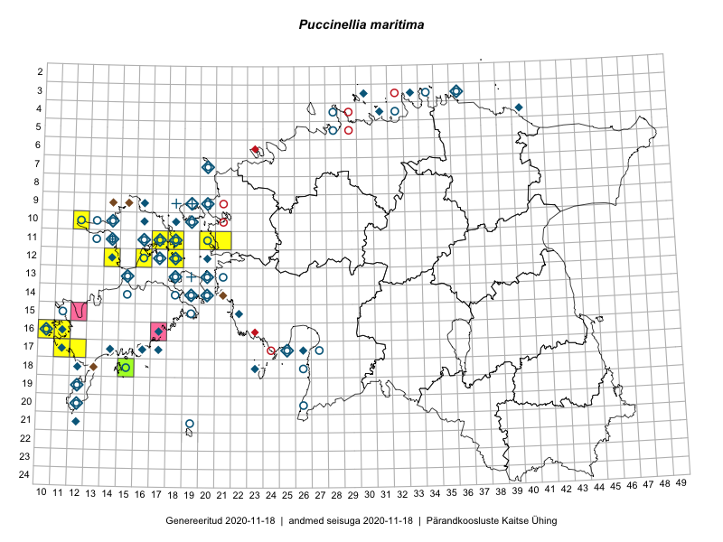

Puccinellia maritima — meri-nadahein
Poaceae :: Puccinellia maritima (Huds.) Parl. (176); Atropis maritima (Huds.) Griseb. (1)

Kaart põhineb 196 kirjel:
vaatlusi 111
herbaareksemplare 66
PKÜ kirjeid1 16
ELFi kirjeid2 3
Taime kaasaegsed ja ajaloolised leiukohad asuvad 69 ruudus.
Tingmärgid ja leidudega ruutude arvud periooditi uues (u) ja 2005 andmestikus (v)
| █ | vahemik | u3 | v4 |
|---|---|---|---|
| █ | 2006–2020 | 15 | – |
| ◆/◇ | 1971–2005 | 45 | 41 |
| ○ | 1921–1970 | 39 | 21 |
| + | kuni 1920 | 4 | 1 |
| × | hävinud | – | 0 |
| ? | kaheldav | – | 0 |
| Ruut | Leidja(d) | Leiuaeg | Kirje |
|---|---|---|---|
| 10-12 | Toomas Kukk, Indrek Tammekänd | 2017-09-12 | ruut/ala: Puccinellia maritima (Huds.) Parl. |
| 12-18 | Toomas Kukk, Peeter Pärn | 2017-06-15 | ruut/ala: Puccinellia maritima (Huds.) Parl. |
| 12-18 | Toomas Kukk, Peeter Pärn | 2017-06-15 | ruut/ala: Puccinellia maritima (Huds.) Parl. |
| 15-12 | Toomas Kukk, Eerik Leibak | 2015-10-14 | PKÜ: 19196 |
| 16-17 | Peedu Saar | 2015-09-18 | PKÜ: 19463 |
| 11-21 | Hanna-Eliisa Luts, Tõnu Ploompuu | 2015-08-13 | ruut/ala: Puccinellia maritima (Huds.) Parl. |
| 11-20 | Hanna-Eliisa Luts, Tõnu Ploompuu | 2015-08-13 | ruut/ala: Puccinellia maritima (Huds.) Parl. |
| 17-11 | Mari Reitalu, Triin Reitalu | 2015-08-05 | ruut/ala: Puccinellia maritima (Huds.) Parl. |
| 17-12 | Mari Reitalu, Triin Reitalu | 2015-07-22–2015-07-31 | ruut/ala: Puccinellia maritima (Huds.) Parl. |
| 10-12 | Eeva-Maria Jeletsky, Tarmo Niitla | 2015-06-26 | ruut/ala: Puccinellia maritima (Huds.) Parl. |
| 12-14 | Eeva-Maria Jeletsky, Tarmo Niitla | 2015-06-25 | ruut/ala: Puccinellia maritima (Huds.) Parl. |
| 16-10 | Sirje Azarov, Mari Reitalu | 2015-06-22 | ruut/ala: Puccinellia maritima (Huds.) Parl. |
| 12-16 | Eeva-Maria Jeletsky, Tarmo Niitla | 2015-06-21 | ruut/ala: Puccinellia maritima (Huds.) Parl. |
| 11-17 | Eeva-Maria Jeletsky, Tarmo Niitla | 2015-06-20 | ruut/ala: Puccinellia maritima (Huds.) Parl. |
| 11-17 | Eeva-Maria Jeletsky, Tarmo Niitla | 2015-06-17 | ruut/ala: Puccinellia maritima (Huds.) Parl. |
| 11-18 | Eeva-Maria Jeletsky, Tarmo Niitla | 2015-06-17 | ruut/ala: Puccinellia maritima (Huds.) Parl. |
| 16-11 | Mari Reitalu | 2015-05-22 | ruut/ala: Puccinellia maritima (Huds.) Parl. |
| 18-15 | Toomas Kukk | 2014-06-18 | ruut/ala: Puccinellia maritima (Huds.) Parl. |
| 18-15 | Toomas Kukk | 2014-06-18 | TAA0113496: Puccinellia maritima (Huds.) Parl. |
| 03-36 | Aveliina Helm, Katrin Jürgens | 2003-07-14 | PKÜ: 10926 |
| 14-21 | Toomas Kukk | 2001-01-29 | PKÜ: 3517 |
| 16-11 | Kadriann Saar | 2000-10-22 | PKÜ: 4258 |
| 11-14 | Toomas Kukk, Bert Holm | 2000-09-06 | PKÜ: 3825 |
| 09-14;09-15 | Toomas Kukk, Bert Holm | 2000-09-05 | PKÜ: 3835 |
| 04-31 | Mari Tobias, Laimi Truus | 2000-08-15 | PKÜ: 3687 |
| 12-18 | Elle Roosaluste | 2000-08-02 | PKÜ: 4196 |
| 17-25 | Elle Roosaluste, Aiki Undrits | 2000-07-07 | PKÜ: 1881 |
| 17-25 | Elle Roosaluste, Aiki Undrits | 2000-07-07 | PKÜ: 1883 |
| 14-19 | Toomas Kukk, Matis Mägi | 2000-06-25 | PKÜ: 6643 |
| 19-12 | Toomas Kukk, Eerik Leibak | 1999-09-02 | PKÜ: 1092 |
| 18-13 | Toomas Kukk, Tõnu Feldmann | 1999-08-11 | PKÜ: 1295 |
| 16-17 | Toomas Kukk, Eerik Leibak | 1999-07-21 | PKÜ: 1185 |
| 14-20 | Toomas Kukk | 1999-06-16 | ruut/ala: Puccinellia maritima (Huds.) Parl. |
| 14-20 | Toomas Kukk | 1999-06-16 | PKÜ: 6968 |
| 14-20 | Toomas Kukk | 1999-06-14–1999-06-17 | ruut/ala: Puccinellia maritima (Huds.) Parl. |
| 13-20 | Tiiu Kull, Vilma Kuusk | 1998-06-25–1998-06-27 | ruut/ala: Puccinellia maritima (Huds.) Parl. |
| 11-17;12-17 | Jaanus Paal, Aino Kalda, Eli Fremstad | 1997-06-20 | ELF: 607 |
| 21-12 | Elle Roosaluste | 1997 | ruut/ala: Puccinellia maritima (Huds.) Parl. |
| 09-20 | Toomas Kukk, Elle Roosaluste | 1996-07-19 | ruut/ala: Puccinellia maritima (Huds.) Parl. |
| 17-14 | M. Reitalu | 1995–1996 | ruut/ala: Puccinellia maritima (Huds.) Parl. |
| 18-23 | U. Laansoo | 1995 | ruut/ala: Puccinellia maritima (Huds.) Parl. |
| 10-19 | Toomas Kukk, Elle Roosaluste | 1994-07-16–1997-08-16 | ruut/ala: Puccinellia maritima (Huds.) Parl. |
| 10-19 | Toomas Kukk, Elle Roosaluste | 1994-07-16 | ruut/ala: Puccinellia maritima (Huds.) Parl. |
| 14-19 | Urmas Tokko | 1993-07-30 | ELF: 1937 |
| 07-20 | Toomas Kukk | 1993-07-30 | TAA0108816: Puccinellia maritima (Huds.) Parl. |
| 09-20 | Toomas Kukk, Elle Roosaluste, Mare Leis | 1993-07-17–1998-09-20 | ruut/ala: Puccinellia maritima (Huds.) Parl. |
| 10-19 | Toomas Kukk, Elle Roosaluste | 1993-06–1998-05-31 | ruut/ala: Puccinellia maritima (Huds.) Parl. |
| 07-20 | Toomas Kukk | 1993 | ruut/ala: Puccinellia maritima (Huds.) Parl. |
| 13-18 | Elle Roosaluste, Urmas Tokko | 1990-07–1991-07 | ELF: 1851 |
| 17-26 | T. Nurmela, Heljo Krall, Vilma Kuusk, Tiiu Kull | 1986-06-22 | ruut/ala: Puccinellia maritima (Huds.) Parl. |
| 15-22 | botaaniline ekspeditsioon ZBI | 1986-06-18–1986-06-21 | ruut/ala: Puccinellia maritima (Huds.) Parl. |
| 15-22 | H. Krall | 1986-06-18 | TAA0108774: Puccinellia maritima (Huds.) Parl. |
| 12-20 | H.-E. Rebassoo | 1985-08-08 | ruut/ala: Puccinellia maritima (Huds.) Parl. |
| 14-20 | Linda Viljasoo, Heljo Krall | 1983-08-25–1983-08-26 | ruut/ala: Puccinellia maritima (Huds.) Parl. |
| 14-19 | Linda Viljasoo, Heljo Krall, Vilma Kuusk | 1983-08-22–1986-06-02 | ruut/ala: Puccinellia maritima (Huds.) Parl. |
| 12-20 | 1983-07-13 | ruut/ala: Puccinellia maritima (Huds.) Parl. | |
| 13-20 | H.-E. Rebassoo | 1983-06-28 | ruut/ala: Puccinellia maritima (Huds.) Parl. |
| 16-10 | H.-E. Rebassoo | 1980-07-10 | ruut/ala: Puccinellia maritima (Huds.) Parl. |
| 13-15 | Taavi Tuulik | 1980–2000 | ruut/ala: Puccinellia maritima (Huds.) Parl. |
| 12-14 | Taavi Tuulik | 1980–2000 | ruut/ala: Puccinellia maritima (Huds.) Parl. |
| 10-18 | Taavi Tuulik | 1980–2000 | ruut/ala: Puccinellia maritima (Huds.) Parl. |
| 16-10 | H.-E. Rebassoo | 1979-07-26 | ruut/ala: Puccinellia maritima (Huds.) Parl. |
| 13-20 | H.-E. Rebassoo | 1979-07-12 | ruut/ala: Puccinellia maritima (Huds.) Parl. |
| 11-18 | H.-E. Rebassoo | 1979-06-23–1980-08-25 | ruut/ala: Puccinellia maritima (Huds.) Parl. |
| 19-12 | Haide-Ene Rebassoo | 1977-10-04 | ruut/ala: Puccinellia maritima (Huds.) Parl. |
| 14-20 | Haide-Ene Rebassoo | 1977-08-25 | ruut/ala: Puccinellia maritima (Huds.) Parl. |
| 18-12 | Haide-Ene Rebassoo | 1977-08-18 | ruut/ala: Puccinellia maritima (Huds.) Parl. |
| 17-11 | Haide-Ene Rebassoo | 1977-08-18 | ruut/ala: Puccinellia maritima (Huds.) Parl. |
| 16-11 | Haide-Ene Rebassoo | 1975-08-01 | ruut/ala: Puccinellia maritima (Huds.) Parl. |
| 16-11 | Haide-Ene Rebassoo | 1975-08-01 | ruut/ala: Puccinellia maritima (Huds.) Parl. |
| 16-10 | H.-E. Rebassoo | 1975-08-01 | ruut/ala: Puccinellia maritima (Huds.) Parl. |
| 16-10 | H.-E. Rebassoo | 1975-08-01 | ruut/ala: Puccinellia maritima (Huds.) Parl. |
| 04-31 | Haide-Ene Rebassoo | 1975-06-21 | ruut/ala: Puccinellia maritima (Huds.) Parl. |
| 03-33 | Haide-Ene Rebassoo | 1975-06-19 | punkt: Puccinellia maritima (Huds.) Parl. |
| 04-40 | H. Rebassoo | 1975-06-19 | TAA0108767: Puccinellia maritima (Huds.) Parl. |
| 16-10 | Mari Reitalu | 1975 | ruut/ala: Puccinellia maritima (Huds.) Parl. |
| 09-19 | Liivia Laasimer | 1975 | ruut/ala: Puccinellia maritima (Huds.) Parl. |
| 16-17 | M. Kask | 1973-07-02 | TAA0108784: Puccinellia maritima (Huds.) Parl. |
| 16-17 | M. Kask | 1973-07-02 | TAA0108785: Puccinellia maritima (Huds.) Parl. |
| 16-17 | M. Kask | 1973-07-02 | TAA0108786: Puccinellia maritima (Huds.) Parl. |
| 16-17 | Vilma Kuusk | 1973-06-30 | TAA0108810: Puccinellia maritima (Huds.) Parl. |
| 16-17 | Vilma Kuusk | 1973-06-30 | TAA0108811: Puccinellia maritima (Huds.) Parl. |
| 16-17 | Vilma Kuusk | 1973-06-30 | TAA0108812: Puccinellia maritima (Huds.) Parl. |
| 17-17 | M. Kask | 1973-06-28 | TAA0108802: Puccinellia maritima (Huds.) Parl. |
| 17-11 | Linda Viljasoo | 1973-06-23 | TAA0108783: Puccinellia maritima (Huds.) Parl. |
| 20-12 | Vilma Kuusk | 1973-06-21 | TAA0108770: Puccinellia maritima (Huds.) Parl. |
| 20-12 | Vilma Kuusk | 1973-06-21 | TAA0108803: Puccinellia maritima (Huds.) Parl. |
| 20-12 | Vilma Kuusk | 1973-06-21 | TAA0108804: Puccinellia maritima (Huds.) Parl. |
| 13-20 | H.-E. Rebassoo | 1973-06-19 | ruut/ala: Puccinellia maritima (Huds.) Parl. |
| 03-30 | Haide-Ene Rebassoo | 1973-06-15 | ruut/ala: Puccinellia maritima (Huds.) Parl. |
| 17-16 | V. Kuusk | 1973-06 | ruut/ala: Puccinellia maritima (Huds.) Parl. |
| 16-11 | Haide-Ene Rebassoo | 1972-07-20 | ruut/ala: Puccinellia maritima (Huds.) Parl. |
| 16-11 | Haide-Ene Rebassoo | 1972-07-20 | ruut/ala: Puccinellia maritima (Huds.) Parl. |
| 16-10 | H.-E. Rebassoo | 1972-07-19 | ruut/ala: Puccinellia maritima (Huds.) Parl. |
| 17-11 | Haide-Ene Rebassoo | 1972-07-18 | ruut/ala: Puccinellia maritima (Huds.) Parl. |
| 11-17 | H. Rebassoo | 1972-07-08 | TAA0108780: Puccinellia maritima (Huds.) Parl. |
| 13-20 | H.-E. Rebassoo | 1972-07-03 | ruut/ala: Puccinellia maritima (Huds.) Parl. |
| 04-31 | Haide-Ene Rebassoo | 1972-06-16 | ruut/ala: Puccinellia maritima (Huds.) Parl. |
| 04-31 | Haide-Ene Rebassoo | 1972-06-09 | ruut/ala: Puccinellia maritima (Huds.) Parl. |
| 07-20 | Haide-Ene Rebassoo | 1972-06-06 | ruut/ala: Puccinellia maritima (Huds.) Parl. |
| 16-11 | Mari Reitalu | 1972–2005 | ruut/ala: Puccinellia maritima (Huds.) Parl. |
| 16-10 | H.-E. Rebassoo | 1971-07-10 | ruut/ala: Puccinellia maritima (Huds.) Parl. |
| 10-16 | Linda Viljasoo | 1971-07-04 | TAA0108775: Puccinellia maritima (Huds.) Parl. |
| 10-16 | Linda Viljasoo | 1971-07-04 | TAA0108776: Puccinellia maritima (Huds.) Parl. |
| 10-16 | Linda Viljasoo | 1971-07-04 | TAA0108777: Puccinellia maritima (Huds.) Parl. |
| 10-16 | Linda Viljasoo | 1971-07-04 | TAA0108778: Puccinellia maritima (Huds.) Parl. |
| 11-17 | Linda Viljasoo | 1971-07-03 | TAA0108771: Puccinellia maritima (Huds.) Parl. |
| 11-17 | Linda Viljasoo | 1971-07-03 | TAA0108772: Puccinellia maritima (Huds.) Parl. |
| 09-16 | Linda Viljasoo | 1971-06-16 | TAA0108781: Puccinellia maritima (Huds.) Parl. |
| 09-16 | Linda Viljasoo | 1971-06-16 | TAA0108782: Puccinellia maritima (Huds.) Parl. |
| 11-16 | Linda Viljasoo | 1971-06-16 | TAA0108787: Puccinellia maritima (Huds.) Parl. |
| 11-16 | Linda Viljasoo | 1971-06-16 | TAA0108788: Puccinellia maritima (Huds.) Parl. |
| 11-16 | Linda Viljasoo | 1971-06-16 | TAA0108789: Puccinellia maritima (Huds.) Parl. |
| 11-16 | Linda Viljasoo | 1971-06-16 | TAA0108796: Puccinellia maritima (Huds.) Parl. |
| 11-16 | Linda Viljasoo | 1971-06-16 | TAA0108797: Puccinellia maritima (Huds.) Parl. |
| 11-16 | Linda Viljasoo | 1971-06-16 | TAA0108798: Puccinellia maritima (Huds.) Parl. |
| 11-16 | L. Viljasoo | 1971-06-16 | TU255290: Puccinellia maritima (Huds.) Parl. |
| 11-16 | 1971-06-16 | TU355162: Puccinellia maritima (Huds.) Parl. | |
| 11-17 | Linda Viljasoo | 1971-06-09 | TAA0108799: Puccinellia maritima (Huds.) Parl. |
| 11-17 | Linda Viljasoo | 1971-06-09 | TAA0108800: Puccinellia maritima (Huds.) Parl. |
| 10-14 | Linda Viljasoo | 1971-06-09 | TAA0108801: Puccinellia maritima (Huds.) Parl. |
| 11-17 | L. Pihlapuu | 1970-07-17 | TU355163: Puccinellia maritima (Huds.) Parl. |
| 11-17 | L. Pihlapuu | 1970-07-17 | TU355183: Puccinellia maritima (Huds.) Parl. |
| 11-16 | M. Kask, A. Roos | 1970-07-14 | TAA0108791: Puccinellia maritima (Huds.) Parl. |
| 11-16 | M. Kask, A. Roos | 1970-07-14 | TAA0108792: Puccinellia maritima (Huds.) Parl. |
| 11-16 | L. Karu | 1970-07-14 | TAA0108807: Puccinellia maritima (Huds.) Parl. |
| 11-18 | botaaniline ekspeditsioon ZBI | 1970 | ruut/ala: Puccinellia maritima (Huds.) Parl. |
| 11-20 | H.-E. Rebassoo | 1969-06-27 | ruut/ala: Puccinellia maritima (Huds.) Parl. |
| 14-18 | Linda Viljasoo | 1964-07-02 | TAA0108805: Puccinellia maritima (Huds.) Parl. |
| 14-18 | Linda Viljasoo | 1964-07-02 | TAA0108806: Puccinellia maritima (Huds.) Parl. |
| 10-19 | E. Lellep | 1963-07-16 | TU355165: Puccinellia maritima (Huds.) Parl. |
| 10-19 | E. Lellep | 1963-07-16 | TU355180: Puccinellia maritima (Huds.) Parl. |
| 10-19 | E. Lellep | 1963-07-15 | TU355167: Puccinellia maritima (Huds.) Parl. |
| 09-20 | E. Lellep | 1963-07-15 | TU355171: Puccinellia maritima (Huds.) Parl. |
| 11-16 | E. Lellep | 1963-07-13 | TU355169: Puccinellia maritima (Huds.) Parl. |
| 13-15 | E. Lellep | 1963-07-11 | TU355166: Puccinellia maritima (Huds.) Parl. |
| 18-26 | E. Lellep | 1963-06-08 | TU355181: Puccinellia maritima (Huds.) Parl. |
| 16-10 | Haide-Ene Rebassoo | 1960-08-26–1980-07-10 | ruut/ala: Puccinellia maritima (Huds.) Parl. |
| 16-10 | Haide-Ene Rebassoo | 1960-08-24–1975-08-01 | ruut/ala: Puccinellia maritima (Huds.) Parl. |
| 16-10 | Haide-Ene Rebassoo | 1960-08-24–1972-07-20 | ruut/ala: Puccinellia maritima (Huds.) Parl. |
| 12-16 | H. Rebassoo | 1960-06-25 | TAA0108779: Puccinellia maritima (Huds.) Parl. |
| 20-12 | Maret Kask, Vilma Kuusk, Liivia Laasimer, Linda Viljasoo | 1959–1980 | ruut/ala: Puccinellia maritima (Huds.) Parl. |
| 11-16 | H. Rebassoo | 1957-06-30 | TAA0108808: Puccinellia maritima (Huds.) Parl. |
| 11-17 | H. E. Rebassoo | 1957-06-28 | TAA0108773: Puccinellia maritima (Huds.) Parl. |
| 10-12 | Haide-Ene Rebassoo | 1957–1984 | ruut/ala: Puccinellia maritima (Huds.) Parl. |
| 10-13 | Haide-Ene Rebassoo | 1957–1984 | ruut/ala: Puccinellia maritima (Huds.) Parl. |
| 10-14 | Haide-Ene Rebassoo | 1957–1984 | ruut/ala: Puccinellia maritima (Huds.) Parl. |
| 11-13 | Haide-Ene Rebassoo | 1957–1984 | ruut/ala: Puccinellia maritima (Huds.) Parl. |
| 11-14 | Haide-Ene Rebassoo | 1957–1984 | ruut/ala: Puccinellia maritima (Huds.) Parl. |
| 11-16 | Haide-Ene Rebassoo | 1957–1984 | ruut/ala: Puccinellia maritima (Huds.) Parl. |
| 11-17 | Haide-Ene Rebassoo | 1957–1984 | ruut/ala: Puccinellia maritima (Huds.) Parl. |
| 11-18 | Haide-Ene Rebassoo | 1957–1984 | ruut/ala: Puccinellia maritima (Huds.) Parl. |
| 12-16 | Haide-Ene Rebassoo | 1957–1984 | ruut/ala: Puccinellia maritima (Huds.) Parl. |
| 12-17 | Haide-Ene Rebassoo | 1957–1984 | ruut/ala: Puccinellia maritima (Huds.) Parl. |
| 12-18 | Haide-Ene Rebassoo | 1957–1984 | ruut/ala: Puccinellia maritima (Huds.) Parl. |
| 12-18 | H. Rebassoo | 1957–1972 | ruut/ala: Puccinellia maritima (Huds.) Parl. |
| 12-18 | H. E. Rebassoo | 1952-06-27 | TU355175: Puccinellia maritima (Huds.) Parl. |
| 11-18 | 1939-06-22 | TU355161: Puccinellia maritima (Huds.) Parl. | |
| 15-19 | B. Saarsoo | 1938-06-25–1938-06-27 | ruut/ala: Puccinellia maritima (Huds.) Parl. |
| 20-26 | A. Tamsalu | 1937-09 | ruut/ala: Puccinellia maritima (Huds.) Parl. |
| 13-21 | A. Tomson | 1936-07-25–1936-07-26 | ruut/ala: Puccinellia maritima (Huds.) Parl. |
| 17-27 | P. Kaaret, A. Tomson | 1936-06–1936-09 | ruut/ala: Puccinellia maritima (Huds.) Parl. |
| 04-28 | J. Rebane | 1936–1938 | ruut/ala: Puccinellia maritima (Huds.) Parl. |
| 03-36 | 1935-09-18–1936-08-02 | ruut/ala: Puccinellia maritima (Huds.) Parl. | |
| 10-14 | A. Tomson | 1935-05 | ruut/ala: Puccinellia maritima (Huds.) Parl. |
| 11-17 | A. Tomson | 1935-04–1935-05 | ruut/ala: Puccinellia maritima (Huds.) Parl. |
| 11-16 | A. Tomson | 1935 | ruut/ala: Puccinellia maritima (Huds.) Parl. |
| 12-16 | A. Tomson | 1935 | ruut/ala: Puccinellia maritima (Huds.) Parl. |
| 11-20 | Gustav Vilbaste | 1934-07-07 | TAA0108793: Puccinellia maritima (Huds.) Parl. |
| 19-12 | 1934–1956 | ruut/ala: Puccinellia maritima (Huds.) Parl. | |
| 05-28 | H. Salasoo, J. Rebane | 1934–1938 | ruut/ala: Puccinellia maritima (Huds.) Parl. |
| 13-18 | A. Tomson | 1934 | ruut/ala: Puccinellia maritima (Huds.) Parl. |
| 13-15 | A. Tomson | 1934 | ruut/ala: Puccinellia maritima (Huds.) Parl. |
| 14-15 | A. Tomson | 1934 | ruut/ala: Puccinellia maritima (Huds.) Parl. |
| 14-18 | A. Tomson | 1934 | ruut/ala: Puccinellia maritima (Huds.) Parl. |
| 14-19 | A. Tomson | 1934 | ruut/ala: Puccinellia maritima (Huds.) Parl. |
| 14-20 | A. Tomson | 1934 | ruut/ala: Puccinellia maritima (Huds.) Parl. |
| 04-32 | Gustav Vilbaste | 1933 | ruut/ala: Puccinellia maritima (Huds.) Parl. |
| 04-32 | Gustav Vilbaste | 1933 | ruut/ala: Puccinellia maritima (Huds.) Parl. |
| 03-34 | Gustav Vilbaste | 1933 | ruut/ala: Puccinellia maritima (Huds.) Parl. |
| 03-34 | T. Lippmaa | 1932-07-23 | TU355179: Puccinellia maritima (Huds.) Parl. |
| 03-34 | Gustav Vilbaste | 1932-07-07 | TAA0108794: Puccinellia maritima (Huds.) Parl. |
| 18-15 | 1932–1972 | ruut/ala: Puccinellia maritima (Huds.) Parl. | |
| 11-17 | Gustav Vilbaste | 1931-07-16 | TAA0108795: Puccinellia maritima (Huds.) Parl. |
| 15-11 | E. Neemaru, Elmar Lepik | 1931-07-08 | TAM0000847: Atropis maritima (Huds.) Griseb. |
| 15-11 | Elmar Lepik | 1931-07-03 | TAA0108809: Puccinellia maritima (Huds.) Parl. |
| 17-25 | T. Lippmaa | 1930-07-21 | TU355176: Puccinellia maritima (Huds.) Parl. |
| 07-20 | Gustav Vilbaste | 1930–1939 | ruut/ala: Puccinellia maritima (Huds.) Parl. |
| 13-20 | Gustav Vilbaste | 1930–1939 | ruut/ala: Puccinellia maritima (Huds.) Parl. |
| 11-20 | Gustav Vilbaste | 1930–1939 | ruut/ala: Puccinellia maritima (Huds.) Parl. |
| 21-19 | Julius Gröntved | 1929 | ruut/ala: Puccinellia maritima (Huds.) Parl. |
| 09-19 | H. Lindberg | 1912-06-29 | TAM0064373: Puccinellia maritima (Huds.) Parl. |
| 09-18 | R. Lehbert | 1904-06-14 | TAM0064372: Puccinellia maritima (Huds.) Parl. |
| 09-18 | R. Lehbert | 1904-06-14 | TAM0064379: Puccinellia maritima (Huds.) Parl. |
| 11-14 | C. Winkler | 1872 | TAA0108768: Puccinellia maritima (Huds.) Parl. |
| 13-19 | Schmidt | TAA0108769: Puccinellia maritima (Huds.) Parl. |
Pärandkoosluste Kaitse Ühingu (PKÜ) andmebaas sisaldab inventeeritud koosluste kirjeldusi ja liigiloendeid. Kõige enam on andmeid niidutaimede kohta.↩︎
Eestimaa Looduse Fondi (ELF) andmebaas sisaldab inventeeritud koosluste kirjeldusi ja liigiloendeid. Eriti rohkesti on andmeid märgalade kohta.↩︎
Ruutude arv uue atlase andmekogu järgi. Muuhulgas arvestab vanemat herbaariumi, 2005. aasta atlase välitöölehtedelt uuesti digitaliseeritud andmeid jne. Uue atlase andmekogust pärinevad andmed on kaardile kantud siniste sümbolitega.↩︎
Ruutude arv 2005. aasta atlase (Kukk, T., Kull, T., Eesti taimede levikuatlas. Eesti Maaülikool, Põllumajandus- ja Keskkonnainstituut, Tartu, 2005) järgi. Andmeallikana on kasutatud levik.exe programmi, kus igas ruudus on registreeritud vaid uusim leid. Seetõttu on vanemate perioodide kohta andmed puudulikud. Kasutatud levik.exe andmestikus leidub mõningaid kõrvalekaldeid atlase trükis ilmunud versioonist, sagedamini tarnade ja käpaliste seas. Lisaks leidub selles andmestikus valik liike (peamiselt väheste leidudega tulnuktaimed), mille kaarte trükis ei avaldatud. Vana atlase andmed ruutudest, milles ei ole uue atlase andmekogus leide enne 2006. aastat, on kaardil esitatud punaste sümbolitega. Vana atlase andmetel hävinud ja kaheldavaid leiukohti pole hilisemate (taas)leidude põhjal korrigeeritud.↩︎